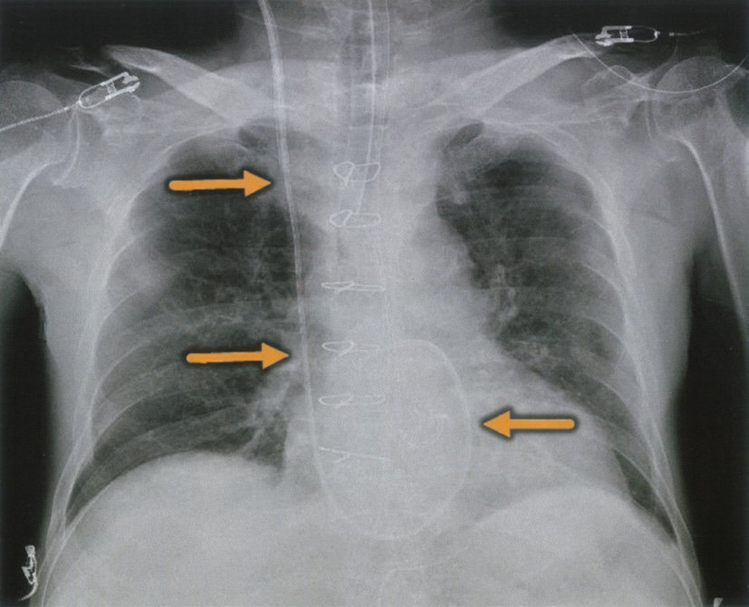
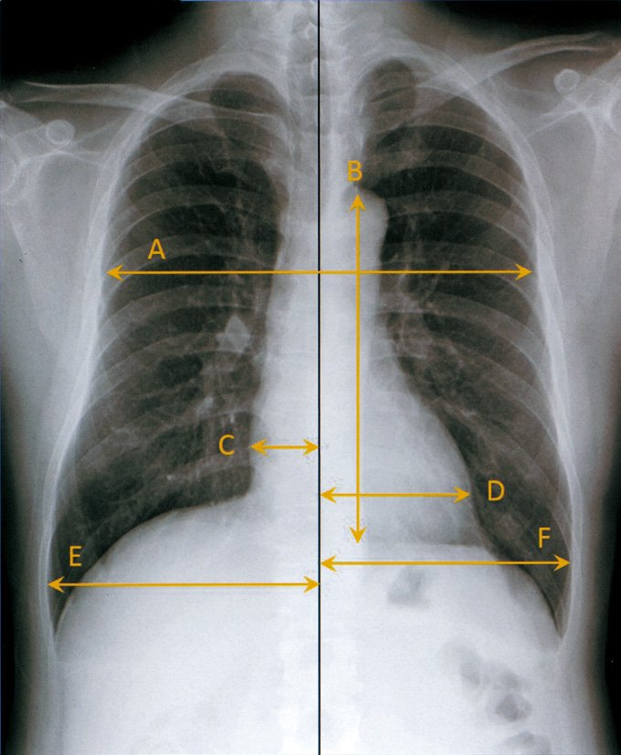
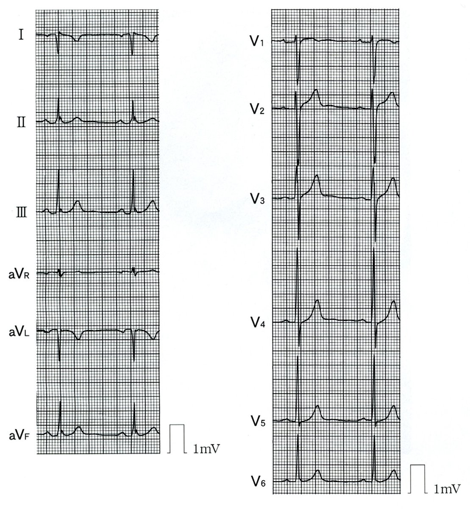
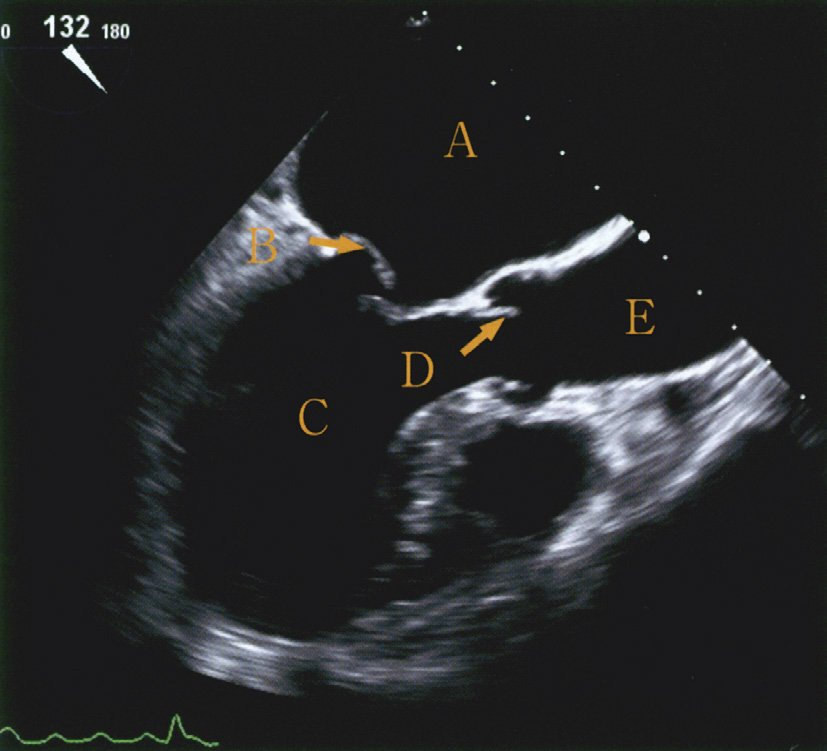
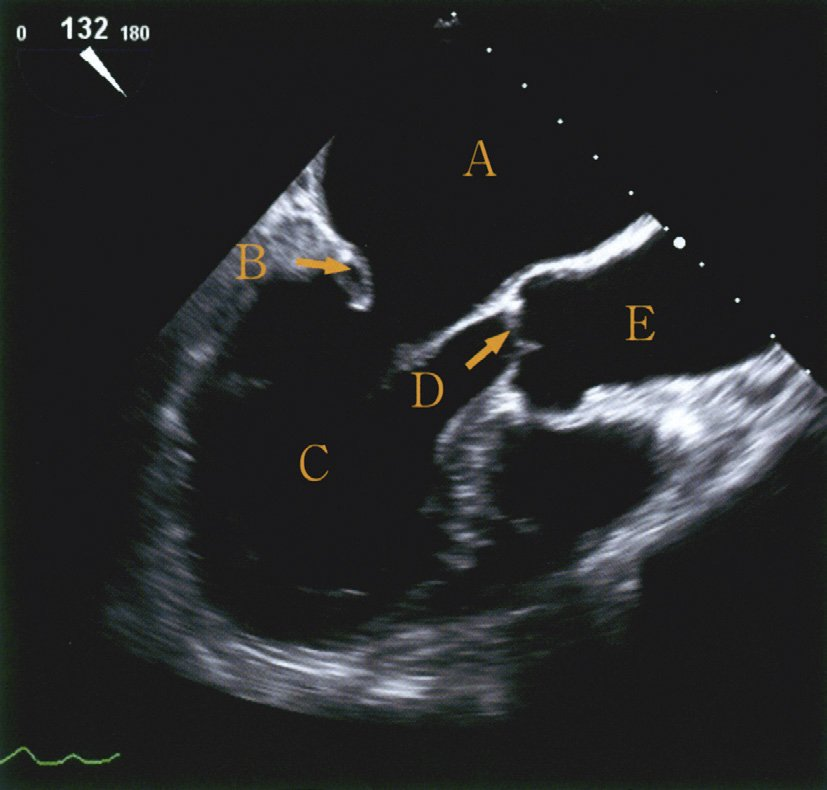
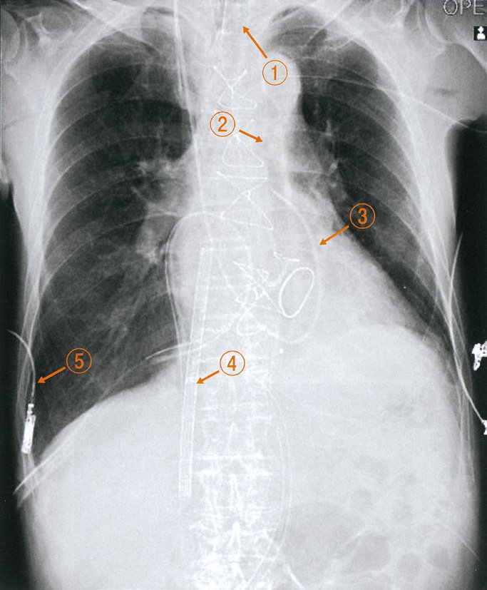
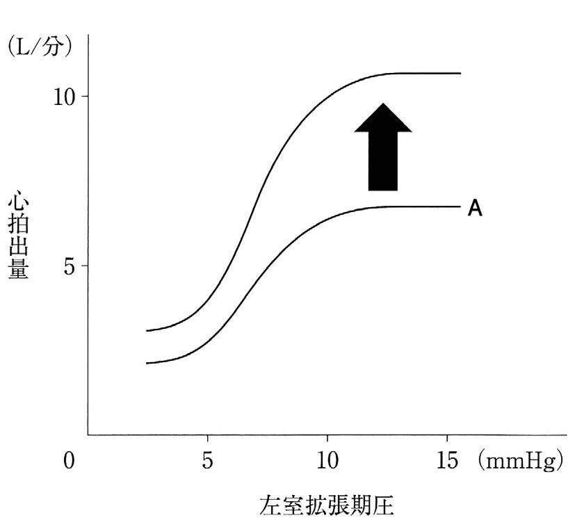
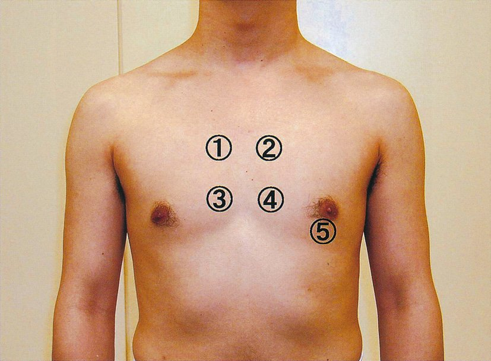

| 音 | 時期 | 代表疾患 |
|---|---|---|
| Ⅲ音 | 拡張早期 | 心不全（容量過負荷）・僧帽弁閉鎖不全 |
| Ⅳ音 | 拡張末期（心房収縮後） | 心室コンプライアンス低下（肥大・高血圧） |
| 心膜摩擦音 | 収縮・拡張両期 | 心膜炎 |
| 心膜ノック音 | 拡張早期（高調） | 収縮性心膜炎 |
| 僧帽弁開放音 | 拡張早期（高調） | 僧帽弁狭窄症 |
| 種類 | 特徴 | 脈圧 | 原因 |
|---|---|---|---|
| 循環血液量減少性 | 頻脈・冷汗・蒼白・尿量↓ | 脈圧↓ | 出血・脱水 |
| 心原性 | 頻脈・冷汗・肺うっ血 | 脈圧↓ | 心筋梗塞・心不全 |
| 血液分布異常性 | 頻脈・温暖皮膚・WBC↑ | 脈圧↑（敗血症初期） | 敗血症・アナフィラキシー |
| 閉塞性 | 頻脈・頸静脈怒張 | 脈圧↓ | 心タンポナーデ・大規模PE |
| 冠動脈 | 灌流領域 |
|---|---|
| 左前下行枝（LAD） | 前壁・心室中隔前部2/3・左室前壁・右脚・左脚前枝 |
| 左回旋枝（LCx） | 側壁・後壁（左優位の場合は下壁も） |
| 右冠動脈（RCA） | 右室・下壁・心室中隔後部1/3・房室結節・洞結節（多くの場合） |
| 対角枝 | 左室前側壁（LADの分枝） |
| 左主幹部（LMT） | LAD・LCxの起始部→左室全体 |
| 選択肢 | 効果 | 理由 |
|---|---|---|
| ａ 後負荷の減少 | CO↑（正答） | 末梢血管抵抗↓→射出しやすい |
| ｂ 心拍数の減少 | CO↓ | CO=SV×HRなのでHR↓→CO↓ |
| ｃ 前負荷の減少 | CO↓ | 拡張末期容量↓→Frank-Starling↓ |
| ｄ 冠血流量の減少 | CO↓ | 心筋虚血→収縮力↓ |
| ｅ 甲状腺機能の低下 | CO↓ | 代謝↓・心収縮力↓ |
| 変化 | 項目 |
|---|---|
| 増大 | 脈圧・収縮期血圧・大動脈弁狭窄症・HFpEF・不整脈 |
| 減少 | 骨量・肺活量・心拡張能・GFR・最大心拍数 |
| 選択肢 | 内容 | 正誤 |
|---|---|---|
| ａ | 10年生存率は約10% | →約90%が正しい |
| ｂ | 年間約1,000例 | →約50〜60例が正しい |
| ｃ | 原疾患は拡張型心筋症が最多 | →正しい |
| ｄ | 術後免疫抑制薬は使わない | →終生投与が必要 |
| ｅ | 平均待機期間1年以下 | →約3〜4年が現状 |

| 測定項目 | 臨床意義 |
|---|---|
| 心拍出量（CO） | 熱希釈法で測定→心機能評価 |
| 肺動脈楔入圧（PCWP） | ≒左室拡張末期圧→左心不全の評価 |
| 肺動脈圧（PAP） | 肺高血圧症の診断 |
| 中心静脈圧（CVP） | 右房圧≈右室拡張末期圧 |
| 混合静脈血酸素飽和度（SvO₂） | 末梢の酸素利用率 |
| ×左室圧 | →挿入部位は右心系のみ |
| ×大動脈圧 | →大動脈には届かない |
| ×左室駆出率（EF） | →エコーで測定 |
| 原因 | 機序 |
|---|---|
| 完全左脚ブロック（LBBB） | 左室収縮遅延→大動脈弁閉鎖遅延 |
| 大動脈弁狭窄症（AS） | 左室駆出時間延長→大動脈弁閉鎖遅延 |
| 右室ペースメーカー | 右室先に収縮→左室遅延 |
| 肺動脈弁狭窄症（PS） | →P₂遅延→正常分裂が拡大（広い分裂）、奇異性ではない |
| ASD | 固定性分裂（奇異性ではない） |
| 電極色 | 配置部位 | 位置 |
|---|---|---|
| 赤（R/RA） | 右鎖骨下 | 右上 |
| 黄（L/LA） | 左鎖骨下 | 左上 |
| 緑/黒（F/RL・LL） | 左下胸部（または右下胸部） | 下 |
| 選択肢 | 判定 | 補足 |
|---|---|---|
| ａ 左回旋枝は側壁・後壁灌流 | 正しい | |
| ｂ 右冠動脈が前室間溝を走行 | 誤り→LADが走行 | 右冠動脈は右房室溝 |
| ｃ 冠血流は拡張期優位 | 正しい | 収縮期は心筋圧迫で血流制限 |
| ｄ 左右の冠動脈はValsalva洞から起始 | 正しい | 左：左Valsalva洞、右：右Valsalva洞 |
| 血管 | レベル |
|---|---|
| 腹腔動脈（celiac） | T12レベル |
| 上腸間膜動脈（SMA） | L1レベル |
| 腎動脈 | L1〜L2レベル |
| 下副腎動脈（腎動脈から分枝） | L1〜L2レベル |
| 精巣/卵巣動脈 | L2レベル |
| 下腸間膜動脈（IMA） | L3レベル |
| 総腸骨動脈（→内腸骨・外腸骨） | L4レベル |
| 特徴 | 判定 |
|---|---|
| 低調な音 | 正しい（ベル型聴診器使用） |
| 座位で増強 | 誤り→左側臥位で増強 |
| 収縮期に聴取 | 誤り→拡張早期（急速流入期） |
| 大動脈弁領域で聴取 | 誤り→心尖部（僧帽弁領域）で最強 |
| 小児で病的 | 誤り→小児・若年者・妊婦では生理的 |
| 選択肢 | 判定 |
|---|---|
| ａ 左心系は右心系の左後方 | 正しい：心臓は左前方が右室、左後方が左室 |
| ｂ 心膜液200〜300ml | 誤り：正常心膜液は20〜50ml |
| ｃ Valsalva洞は大動脈弁直下の左室 | 誤り：大動脈弁直上の大動脈の膨隆 |
| ｄ 左冠動脈は房室結節へ血流供給 | 誤り：房室結節は主に右冠動脈が供給 |
| ｅ 左内胸動脈は左鎖骨下動脈から | 正しい：CABG（冠動脈バイパス術）に使用 |
| 項目 | 要点 |
|---|---|
| マンシェット幅 | 上腕の周囲の40〜80%（細すぎると高値） |
| カフ位置 | 上腕動脈を圧迫（聴診器をカフの中に入れない） |
| マンシェット巻き方 | 肘窩から2〜3cm上（近位端が上） |
| 体位 | 上腕を心臓と同じ高さに保つ |

| 項目 | 測定方法 |
|---|---|
| 測定可能 | 僧帽弁口面積（MVA）・EF・壁運動・心内腔径・弁逆流量 |
| ×中心静脈圧（CVP） | スワンガンツカテーテルや中心静脈ライン |
| ×平均大動脈圧・左室収縮期圧 | →カテーテル検査（連続波ドプラで推定可能） |
| ×混合静脈血酸素飽和度 | →スワンガンツカテーテル |
| 弓 | 構造 | 突出する疾患 |
|---|---|---|
| 第1弓（最上） | 大動脈弓（大動脈結節） | 大動脈瘤で突出 |
| 第2弓 | 肺動脈弓（肺動脈幹） | 肺高血圧・肺動脈弁狭窄で突出 |
| 第3弓 | 左房弓（左心耳） | 僧帽弁狭窄症・MR・左心不全で突出 |
| 第4弓（最下） | 左室弓 | 左室拡大で突出 |
| 構造 | 特徴 | 備考 |
|---|---|---|
| 洞結節（SA node） | 右房上部（上大静脈開口部付近） | 自動能60-80回/分 |
| 房室結節（AV node） | 0.05〜0.1秒の遅延 | 右房下部（Koch三角）→弁膜症・薬剤でブロック |
| His束 | 高速（0.5 m/秒） | 心室中隔上部 |
| 右脚・左脚 | 高速 | 心室中隔 |
| Purkinje線維 | 最速（4 m/秒） | 心内膜下→心筋全体に伝達 |
| 項目 | 内容 |
|---|---|
| 測定できるもの | 心拍出量（CO）・肺動脈圧（PAP）・肺動脈楔入圧（PCWP）・中心静脈圧（CVP）・SvO₂ |
| 測定できないもの | 左室駆出率（EF）・大動脈圧・左室圧・冠動脈血流 |
| 部位 | 正常値 | 備考 |
|---|---|---|
| 中心静脈圧（CVP/右房圧） | 2〜8 mmHg | |
| 右室圧 | 収縮期25 / 拡張期0〜5 mmHg | |
| 肺動脈圧（PAP） | 収縮期25 / 拡張期10 mmHg | 平均15mmHg |
| 肺動脈楔入圧（PCWP） | 6〜12 mmHg | ≒LVEDP |
| 左室拡張末期圧（LVEDP） | 6〜12 mmHg（正常）→20mmHgは異常↑ | |
| 大動脈圧 | 収縮期120 / 拡張期80 mmHg |
| 効果 | 機序 |
|---|---|
| 心拍出量増加 | 後負荷↓→SV↑ |
| 冠血流量増加 | 拡張期バルーン膨張→冠灌流圧↑ |
| 拡張期血圧上昇 | 拡張期増強 |
| 左室後負荷減少 | 収縮期バルーン収縮→大動脈圧↓ |
| ×収縮期血圧上昇 | 誤り→収縮期血圧は低下する |

| 選択肢 | 正誤 | 補足 |
|---|---|---|
| ａ Ⅰ音は心基部で最強 | 誤り→心尖部で最強（僧帽弁・三尖弁） | |
| ｂ 肺高血圧→Ⅱ音亢進 | 正しい | P₂（肺動脈弁成分）が亢進 |
| ｃ 中高年のⅢ音は病的 | 正しい | 心不全・容量負荷の所見 |
| ｄ Ⅳ音は心房細動で聴取不可 | 正しい | Ⅳ音＝心房収縮時の振動→Afでは消失 |
| ｅ Ⅱ音の奇異性分裂→肺動脈弁狭窄 | 誤り→奇異性分裂の原因は左脚ブロック・AS | 肺動脈弁狭窄は広い分裂（P₂遅延） |
| 弁 | 受ける圧力 |
|---|---|
| 大動脈弁（閉鎖時） | 左室弛緩期〜拡張期：大動脈圧80mmHg（拡張期） |
| 僧帽弁（閉鎖時） | 左室収縮期：120mmHg（左室圧）を左室側から受ける |
| 肺動脈弁（閉鎖時） | 右室弛緩期：肺動脈拡張期圧約10mmHg |
| 三尖弁（閉鎖時） | 右室収縮期：約25mmHg |


| 構造 | 位置 | 特徴 |
| 左房（LA） | 後方（食道直前） | 壁が薄い・肺静脈流入 |
| 僧帽弁（MV） | LA-LV間 | 拡張期に開口・前尖と後尖 |
| 左室（LV） | 僧帽弁の前下方 | 壁が厚い・拡張期大きい |
| 選択肢ａ Aは左房 | 左房はAではなく別構造 | |
| 選択肢ｄ Dは肺動脈弁 | TEEでは肺動脈弁は別断面 | |
| 選択肢ｅ Eは左心房 | 位置が異なる |
| 観察項目 | 内容 |
| グラフト開存 | 造影剤の流れ（enhancement）を確認 |
| 石灰化 | SVGは経年的に石灰化しやすい |
| 吻合部位 | 瘤病変の遠位部（虚血心筋への灌流のため） |
| 瘤病変 | 瘤の縮小・拡大・血栓化を確認 |
| 所見 | 特徴？ | 理由 |
| 食後血圧低下 | ○特徴 | 食後の消化管血流増加→血圧低下（高齢者で顕著） |
| 起立性低血圧 | ○特徴 | 圧受容体反射低下・血管硬化 |
| 拡張期高血圧 | ✕（特徴でない） | 高齢者は大動脈硬化→収縮期高血圧が主体 |
| 血圧動揺性増大 | ○特徴 | 圧受容体感受性低下・白衣高血圧 |
| 臓器血流予備能低下 | ○特徴 | 降圧治療で臓器虚血を起こしやすい |

| PCPS（ECMO） | IABP | |
| 機序 | 心肺バイパス（体外循環） | 大動脈内バルーン拡張縮小 |
| 効果 | CO完全補助 | CO補助（部分的） |
| カテーテル挿入部位 | 大腿静脈（脱血）・大腿動脈（送血） | 大腿動脈→下行大動脈 |
| X線での位置 | 大腿部〜腸骨動脈 | 下行大動脈（Th2-4） |
| 選択肢 | 判定 | 理由 |
| ａ 右室の虚脱 | ✕ | 心タンポナーデの所見（本症とは別） |
| ｂ 左室内腔の拡大 | ✕ | 拡張型心筋症の所見（アミロイドでは小さい） |
| ｃ 左室駆出率の低下 | ✕（初期は） | 拘束型→初期EFは保たれる |
| ｄ 心室中隔の菲薄化 | ✕ | 薄くなるのは壁運動異常・心筋梗塞後 |
| ｅ 左室壁の著明な肥厚 | ○ | アミロイド沈着→心肥大 |
| 原則 | 内容 |
| ａ 感情への共感 | ○：患者の感情を受け止める（EBM的対応） |
| ｂ 病気の認識を確認 | ○：患者が理解していることを把握してから説明 |
| ｃ どこまで知りたいか確認 | ○：情報提供の範囲は患者の意向に合わせる |
| ｄ 正確な説明を避ける | ✕（不適切）：インフォームドコンセントに反する |
| ｅ プライバシーへの配慮 | ○：個室・静かな環境での面談が基本 |

| 薬剤 | FrankーStarling曲線への影響 | 機序 |
| ａ ドパミン | 上方移動（正のinotropic） | β₁刺激→心収縮力↑・CO↑ |
| ｂ フロセミド | 左方移動（前負荷↓） | 利尿→循環血液量↓→前負荷↓ |
| ｃ リドカイン | 変化なし（または負のinotropic） | 抗不整脈薬（Naチャネル遮断） |
| ｄ ニフェジピン | 後負荷↓（移動は複雑） | Ca拮抗薬→血管拡張→後負荷↓ |
| ｅ ニトログリセリン | 前負荷↓（左方） | 静脈拡張→前負荷↓ |
| 選択肢 | 判定 | 解説 |
| ａ 冠静脈洞→右房開口 | ○正しい | Koch三角の下端に開口 |
| ｂ 大動脈弁に腱索 | ✕ | 腱索は僧帽弁・三尖弁（房室弁）に付着。半月弁には腱索なし |
| ｃ 洞結節が心房中隔下端 | ✕ | 洞結節は上大静脈開口部付近の右房上部（中隔下端は房室結節） |
| ｄ Valsalva洞は肺動脈起部 | ✕ | Valsalva洞は大動脈弁直上の大動脈基部（左冠動脈・右冠動脈が起始） |
| ｅ 冠血流は収縮期が主 | ✕ | 左冠動脈は収縮期に心筋圧迫で血流制限→拡張期優位 |
| 選択肢 | 判定 | 解説 |
| ａ 収縮期高血圧が多い | ○正しい | 大動脈硬化→弾性低下→収縮期圧↑・脈圧↑ |
| ｂ 起立性低血圧の合併が少ない | ✕ | 高齢者では圧受容体反射低下→起立性低血圧が多い |
| ｃ 高用量で治療開始 | ✕ | 高齢者は少量から開始（臓器血流自動調節能低下） |
| ｄ 降圧目標が若年者より低い | ✕ | 高齢者でも積極的降圧が有益。目標は130/80mmHg未満（2019年JSH） |
| ｅ 有病率の男女差が若年より大 | ✕ | 高齢者では女性の有病率が増加し男女差は縮小 |
| 選択肢 | 判定 | 解説 |
| ａ 高血圧→Ⅱ音亢進 | ○ | 大動脈圧↑→A₂（大動脈弁閉鎖成分）が亢進 |
| ｂ 心嚢液貯留→Ⅱ音亢進 | ✕ | 心嚢液→Ⅱ音は減弱（音が伝わりにくい） |
| ｃ 完全左脚ブロック→生理的分裂 | ✕ | 完全LBBBでは奇異性（逆説的）分裂（P₂A₂の逆転） |
| ｄ 肺動脈弁狭窄→奇異性分裂 | ✕ | PSでは広い分裂（P₂遅延だが逆転はしない） |
| ｅ ASD→病的分裂 | ✕ | ASDは固定性分裂（呼吸変動なし・固定） |
| 適応 | 禁忌 |
| 拡張型心筋症（最多） | 薬物依存症（アルコール・覚醒剤等） |
| 虚血性心筋症 | 活動性感染症 |
| 肥大型心筋症（拡張相） | 悪性腫瘍（治癒後5年未満） |
| 拘束型心筋症 | 重篤な肺高血圧（PVR>6Wood単位） |
| 先天性心疾患 | 高齢（65歳超は慎重） |
| 選択肢 | 判定 | 解説 |
| ａ 僧帽弁は半月弁 | ✕ | 僧帽弁は房室弁（二尖弁）。半月弁は大動脈弁・肺動脈弁 |
| ｂ 三尖弁に腱索 | ○ | 房室弁（三尖弁・僧帽弁）には乳頭筋から腱索が付着 |
| ｃ 僧帽弁前尖→左室流出路形成 | ○ | 前尖（大きい）は大動脈弁に接し左室流出路の一部を形成 |
| ｄ 僧帽弁の腱索が1本の乳頭筋から | ✕ | 僧帽弁は2つの乳頭筋（前乳頭筋・後乳頭筋）から腱索を受ける |
| ｅ 肺動脈弁と大動脈弁が線維組織で隔てられる | ✕ | 両弁は線維性連続ではなく僧帽弁-大動脈弁（MV-Ao）が線維性連続 |
| 選択肢 | 判定 | 解説 |
| ａ Holter心電図は胸部6誘導 | ✕ | Holter心電図は通常2〜3誘導（CM5等）で24時間記録 |
| ｂ 心エコーは明るい検査室 | ✕ | 心エコーは暗室で行う（プローブの映像を見やすくするため） |
| ｃ EPS（電気生理検査）は病室 | ✕ | EPSはカテーテル検査室（X線透視・除細動器が必要） |
| ｄ V1は胸骨左縁第5肋間 | ✕ | V1は胸骨右縁第4肋間（V2が胸骨左縁第4肋間） |
| ｅ トレッドミルで負荷中に記録 | ○ | 運動中から回復後まで連続12誘導記録 |
| 選択肢 | 判定 | 解説 |
| ａ 右冠動脈近位部が前室間溝走行 | ✕ | 前室間溝は左前下行枝（LAD）が走行（Q14参照） |
| ｂ LADが冠状溝走行 | ✕ | 冠状溝を走行するのは左回旋枝（LCx）と右冠動脈（RCA） |
| ｃ LADから心室中隔枝が分枝 | ○ | 心室中隔枝（septal branch）はLADの枝→心室中隔前2/3灌流 |
| ｄ LCx近位部が後室間溝走行 | ✕ | 後室間溝は右冠動脈の後下行枝（PDA）が走行（右優位） |
| ｅ LADがValsalva洞から起始 | ✕ | LADの起始は左主幹部（LMT）からの分岐（Valsalva洞からではない） |
| 選択肢 | 判定 | 解説 |
| ａ 総肝動脈 | ✕ | 腹腔動脈（celiac）から分枝→腹部大動脈の枝 |
| ｂ 左総頸動脈 | ○ | 大動脈弓から直接分枝（第2枝） |
| ｃ 右椎骨動脈 | ✕ | 右鎖骨下動脈→腕頭動脈→大動脈（間接的） |
| ｄ 右鎖骨下動脈 | ✕ | 腕頭動脈から分枝（大動脈弓から直接ではない） |
| ｅ 左外腸骨動脈 | ✕ | 左総腸骨動脈から分枝（腹部大動脈→総腸骨） |
| 選択肢 | 判定 | 解説 |
| ａ 拡張期血圧が高い | ✕ | 高齢者は収縮期高血圧（孤立性）が主体（Q36・Q44参照） |
| ｂ 血圧日内変動が小さい | ✕ | 高齢者は自律神経機能低下→血圧変動が大きい |
| ｃ 起立時に血圧が上昇 | ✕ | 高齢者は圧受容体反射低下→起立性低血圧が多い |
| ｄ 脳血流自動調節能が低下 | ○ | 降圧過剰→脳血流↓→脳虚血リスク→慎重な降圧が必要 |
| ｅ 降圧薬で脳血管障害は減少しない | ✕ | 適切な降圧療法は脳卒中リスクを有意に減少 |
| 選択肢 | 判定 | 解説 |
| ａ 僧帽弁は三尖で構成 | ✕ | 僧帽弁は二尖（前尖・後尖）で構成（三尖は三尖弁） |
| ｂ 大動脈弁に腱索 | ✕ | 大動脈弁は半月弁→腱索なし（腱索は房室弁） |
| ｃ 肺動脈弁輪周囲を刺激伝導系が走行 | ✕ | 刺激伝導系（His束・左脚・右脚）は主に心室中隔を走行 |
| ｄ 三尖弁と肺動脈弁が線維性連続 | ✕ | 線維性連続があるのは僧帽弁と大動脈弁（弁間維帯） |
| ｅ 僧帽弁輪周囲をLCxが走行 | ○ | LCxは左房室溝（冠状溝）→僧帽弁輪の外側に近接→LCx障害で僧帽弁機能不全も |
| 開口 | 右房？ | 備考 |
| ａ 奇静脈 | ✕ | 奇静脈は上大静脈に合流（右房に直接開口しない） |
| ｂ 肺静脈 | ✕ | 肺静脈は左房に開口（4本） |
| ｃ 下大静脈 | ○ | 右房下部に開口（Eustachian弁が付着） |
| ｄ 右腕頭静脈 | ✕ | 右腕頭静脈は上大静脈に合流後に右房に開口 |
| ｅ 冠状静脈洞 | ○ | Koch三角の下端に開口（心臓自体の静脈血を集める） |
| 特徴 | 正誤 | 詳細 |
| ａ 低調な音 | ○ | ベル型聴診器で聴取。膜型では聞こえにくい |
| ｂ 座位で増強 | ✕ | 左側臥位で増強（心尖部が胸壁に近づく） |
| ｃ 収縮期に聴取 | ✕ | 拡張早期（急速流入期）に聴取 |
| ｄ 大動脈弁領域で最強 | ✕ | 心尖部（僧帽弁領域）で最強 |
| ｅ 小児で聴取すれば病的 | ✕ | 小児・若年者・妊婦では生理的 |
| 選択肢 | 判定 | 解説 |
| ａ 上腕は肩の高さに保つ | ✕ | 上腕は心臓の高さ（肘を心臓の高さに） |
| ｂ マンシェット遠位端が肘窩に重なる | ✕ | 聴診器を置く空間が必要→遠位端は肘窩から2〜3cm上（近位端を上にして巻く） |
| ｃ ゴム囊の中央が上腕動脈 | ○ | 圧迫が均一になるように中央を動脈に合わせる |
| ｄ 減圧を素早く行う | ✕ | 減圧は2〜4mmHg/秒でゆっくり（速いとⅠ相・Ⅴ相を逃す） |
| ｅ Korotkoff音消失点を収縮期血圧 | ✕ | Korotkoff音の出現時点（Ⅰ相）が収縮期血圧・消失点（Ⅴ相）が拡張期血圧 |
| 選択肢 | 判定 | 解説 |
| ａ 安静時冠血流量は心拍出量の20% | ✕ | 安静時冠血流量は心拍出量の約5%（250mL/分程度） |
| ｂ 心外膜側が心内膜側より虚血になりやすい | ✕ | 収縮期に心内膜側（高圧）が圧迫→心内膜側（内膜下）が虚血になりやすい |
| ｃ 左冠動脈は拡張期優位 | ○ | 収縮期に心筋収縮→左室壁内圧↑→左冠動脈血流制限→拡張期に流れる |
| ｄ 左冠動脈主幹部が主肺動脈の前方 | ✕ | LMTは主肺動脈の後方を走行（大動脈後方） |
| ｅ LADは左室前壁と心室中隔を灌流 | ○ | LAD→対角枝（前側壁）＋心室中隔枝（中隔前2/3）（Q3参照） |
| 選択肢 | 判定 | 解説 |
| ａ 待機期間が短い | ✕ | 日本の待機期間は世界最長レベル（約3〜4年） |
| ｂ 対象は若年者に限られる | ✕ | 65歳未満が一般的な上限だが絶対的ではない |
| ｃ 施行数が急速に増加 | ✕ | 年間約50〜60例と少ない（法改正後も限定的） |
| ｄ 最多原疾患は虚血性心筋症 | ✕ | 日本の最多適応は拡張型心筋症（DCM、約50%） |
| ｅ VAD装着患者が多い | ○ | 長期待機→体外式・植込み型VAD装着後に移植 |
| 選択肢 | 判定 | 解説 |
| ａ 右総頸動脈 | ✕ | 腕頭動脈→大動脈弓（間接） |
| ｂ 右鎖骨下動脈 | ✕ | 腕頭動脈→大動脈弓（間接） |
| ｃ 右椎骨動脈 | ✕ | 右鎖骨下動脈から分枝（間接） |
| ｄ 内胸動脈 | ✕ | 鎖骨下動脈から分枝（大動脈弓→鎖骨下動脈→内胸動脈） |
| ｅ 気管支動脈 | ○ | 胸部下行大動脈（Th5〜6）から直接分枝→肺への栄養血管 |

| 部位 | 位置 | 代表的な弁・所見 |
| 大動脈弁領域（①） | 胸骨右縁第2肋間 | AS・AI（拡張期雑音） |
| 肺動脈弁領域（②） | 胸骨左縁第2肋間 | PS・PI・Ⅱ音の分裂 |
| Erb点（③） | 胸骨左縁第3〜4肋間 | AI・心膜摩擦音 |
| 三尖弁領域（④） | 胸骨左縁第4〜5肋間 | TS・TR・Ⅰ音 |
| 僧帽弁領域（⑤） | 心尖部 | MS・MR・Ⅲ音・Ⅳ音 |
| 選択肢 | 判定 | 解説 |
| ａ 起床時が最も低い | ✕ | 血圧は通常早朝（起床後1〜2時間）に上昇（morning surge） |
| ｂ 運動中は低下 | ✕ | 運動中は心拍出量増加→収縮期血圧上昇（動的運動） |
| ｃ 入浴後に上昇 | ✕ | 入浴直後（湯から上がると）は血管拡張→血圧低下（急激な低下に注意） |
| ｄ 加齢とともに上昇 | ○ | 大動脈硬化→収縮期圧↑→加齢性高血圧 |
| ｅ 下肢が上肢より低い | ✕ | 健常者では下肢血圧（SBP）が上肢より高い（踝上腕比ABI>1.0が正常） |
| 構造 | 位置 | 臨床的意義 |
| 右心室 | 最前方（胸骨直後） | 胸部外傷で最初に損傷・心臓マッサージの圧迫点 |
| 右心房 | 前方・右側 | CVPカテーテルの先端位置 |
| 左心室 | 後方・左側 | 心尖拍動（第5肋間・鎖骨中線内側） |
| 左心房 | 最後方 | TEEで最もよく見える・肺静脈が流入 |
| 臓器 | 心拍出量に占める割合 | 血流量（心拍出量5L/分として） |
| 脳 | 約15% | 約750mL/分 |
| 心（冠循環） | 約5% | 約250mL/分→正解 |
| 肺 | 全量 | （肺循環は全心拍出量） |
| 肝臓（門脈+肝動脈） | 約25〜30% | 約1,250〜1,500mL/分 |
| 腎臓 | 約20〜25% | 約1,000〜1,250mL/分 |
| 選択肢 | 判定 | 解説 |
| ａ 心尖拍動は前腋窩線で触知 | ✕ | 心尖拍動は第5肋間鎖骨中線内側（前腋窩線より内側） |
| ｂ 座位で内頸静脈拍動がみられる | ✕ | 正常の静脈圧では45°頭部挙上位で内頸静脈拍動が頸部で見える |
| ｃ 下肢収縮期血圧が上肢より高い | ○ | 反射波の加算→末梢ほど収縮期血圧高い（ABI>1.0）。<1.0は閉塞性動脈硬化症を示唆 |
| ｄ Ⅱ音は呼気時に分裂 | ✕ | Ⅱ音の生理的分裂は吸気時（A₂-P₂分離が拡大） |
| ｅ Ⅲ音はベル型より膜型で聴取 | ✕ | Ⅲ音は低調音→ベル型聴診器で聴取（膜型は高調音向き） |
| 選択肢 | 判定 | 解説 |
| ａ 子宮動脈 | ✕ | 子宮動脈は内腸骨動脈（骨盤内）から分枝 |
| ｂ 上殿動脈 | ✕ | 上殿動脈は内腸骨動脈から分枝 |
| ｃ 上膀胱動脈 | ✕ | 上膀胱動脈は内腸骨動脈（臍動脈から）から分枝 |
| ｄ 閉鎖動脈 | ✕ | 閉鎖動脈は内腸骨動脈から分枝 |
| ｅ 卵巣動脈 | ○ | 腹部大動脈L2〜L3レベルから直接分枝（精巣動脈も同様） |
| 選択肢 | 判定 | 解説 |
| ａ 心拍数減少 | CO↓ | CO=SV×HR。HR↓→CO↓（代償がなければ） |
| ｂ 循環血液量減少 | CO↓ | 前負荷↓→Frank-Starling↓→SV↓→CO↓ |
| ｃ 心筋収縮性低下 | CO↓ | 収縮力↓→SV↓→CO↓ |
| ｄ 心筋拡張性低下 | CO↓ | 拡張障害→充満不十分→前負荷↓→CO↓ |
| ｅ 末梢血管抵抗低下（後負荷↓） | CO↑ | 後負荷↓→射出しやすい→SV↑→CO↑ |
| 選択肢 | 判定 | 解説 |
| ａ Ⅰ音の前後に注目 | ✕ | Ⅲ音はⅡ音の直後（拡張早期）に注目 |
| ｂ 左側臥位で聴取しやすい | ○ | 左側臥位→心尖部が胸壁に近づく→Ⅲ音増強 |
| ｃ 聴診器は膜型を使用 | ✕ | Ⅲ音は低調音→ベル型で聴取 |
| ｄ 下肢を挙上すると減弱 | ✕ | 下肢挙上→静脈還流↑→前負荷↑→Ⅲ音は増強 |
| ｅ 胸骨左縁第4肋間で最強 | ✕ | Ⅲ音は心尖部（僧帽弁領域）で最強（三尖弁Ⅲ音は胸骨左縁第4〜5肋間） |
| 選択肢 | 判定 | 解説 |
| ａ 血圧変動が大きい | ○ | 圧受容体反射低下→日内変動・白衣高血圧・食後低血圧が顕著 |
| ｂ 拡張期高血圧が多い | ✕ | 高齢者は収縮期高血圧（孤立性）が主体（Q36・Q44参照） |
| ｃ 高血圧性臓器障害の頻度が低い | ✕ | 高齢者ほど臓器障害（脳卒中・心臓病・腎症）のリスクが高い |
| ｄ 降圧薬療法で脳血管障害は減少しない | ✕ | 降圧治療で脳卒中リスクが有意に減少（エビデンス多数） |
| ｅ 生活習慣の改善で降圧効果なし | ✕ | 塩分制限・運動・節酒は高齢者でも降圧効果あり |
| 選択肢 | 判定 | 解説 |
| ａ 内頸静脈が総頸動脈の内側 | ✕ | 内頸静脈は総頸動脈の外側を走行（VAN：静脈・動脈・神経の順に内→外） |
| ｂ 鎖骨下静脈が鎖骨と第1肋骨の間 | ○ | 鎖骨と第1肋骨の間→中心静脈カテーテル挿入の解剖的ランドマーク |
| ｃ 胸管が右鎖骨下静脈に合流 | ✕ | 胸管は左鎖骨下静脈（左静脈角）に合流（右リンパ本管は右に合流） |
| ｄ 肋間動脈が肋骨上縁を走行 | ✕ | 肋間動脈・神経は肋骨下縁（肋骨溝）を走行→胸腔穿刺は肋骨上縁を狙う |
| ｅ 大腿静脈が大腿動脈の外側 | ✕ | 大腿静脈は大腿動脈の内側（NAVEL：神経・動脈・静脈・空間・リンパ節） |
| 選択肢 | 判定 | 解説 |
| ａ 上腕は肩の高さに保つ | ✕ | 上腕を心臓の高さ（肘窩が心臓の高さ）に保つ |
| ｂ 聴診器のヘッドを圧迫帯の中に入れる | ✕ | 聴診器は圧迫帯の遠位端（肘窩に位置する動脈上）に置く。圧迫帯の中には入れない |
| ｃ 圧迫帯の遠位端が肘窩にくるように | ✕ | 圧迫帯の下端は肘窩から約2〜3cm上方（聴診スペースを確保） |
| ｄ 圧迫帯はきつく巻く | ✕ | 指1〜2本入るくらいの適度な強さ（きつすぎると高値に偽測定） |
| ｅ カフの中央が上腕動脈 | ○ | ゴム囊の中央が動脈に合うと適切な圧迫→正確な測定 |
| 選択肢 | 判定 | 解説 |
| ａ 右冠動脈は右前Valsalva洞から | ○ | 右冠動脈：右前Valsalva洞（右冠尖直上）から起始 |
| ｂ 右鎖骨下動脈は胸部大動脈から | ✕ | 右鎖骨下動脈は腕頭動脈（大動脈弓→腕頭動脈→右鎖骨下・右総頸） |
| ｃ 左鎖骨下動脈は総頸動脈から | ✕ | 左鎖骨下動脈は大動脈弓から直接分枝（総頸動脈からではない） |
| ｄ 左内胸動脈→左鎖骨下動脈から | ○ | LITA（内胸動脈）：左鎖骨下動脈の第1枝→CABG graftsに重要 |
| ｅ 総腸骨動脈→外腸骨＋内腸骨 | ○ | L4レベルで腹部大動脈が左右総腸骨動脈に分岐→各々が外腸骨（下肢）＋内腸骨（骨盤）に分岐 |
| 選択肢 | 判定 | 解説 |
| ａ 洞結節は下大静脈にある | ✕ | 洞結節は上大静脈と右心耳の接合部（上大静脈右房接合部） |
| ｂ 房室結節は右房にある | ○ | Koch三角（右房下部）に位置 |
| ｃ His束は左房にある | ✕ | His束は心室中隔の上部を走行（房室結節から続く） |
| ｄ 右脚は右房にある | ✕ | 右脚は心室中隔の右側を走行して右室心筋に分布 |
| ｅ Purkinje線維は心内膜内にある | ✕ | Purkinje線維は心内膜直下の心筋内に分布（心内膜ではなく心筋層） |
| 選択肢 | 判定 | 解説 |
| ａ 左肺動脈が上行大動脈の前方 | ✕ | 左肺動脈は上行大動脈の後方を通り左肺門へ |
| ｂ 右冠動脈は右Valsalva洞から | ○ | 右冠動脈：右前Valsalva洞（大動脈弁右冠尖直上）から起始（Q75参照） |
| ｃ 胸管は左鎖骨下静脈に還流 | ○ | 胸管は全身のリンパを集め左静脈角（左鎖骨下静脈・左内頸静脈合流部）に合流 |
| ｄ 下大静脈は下行大動脈の左 | ✕ | 下大静脈は下行大動脈の右側を走行 |
| ｅ 大腿動脈が大腿静脈の内側 | ✕ | 大腿動脈は大腿静脈の外側（静脈が内側・動脈が外側） |